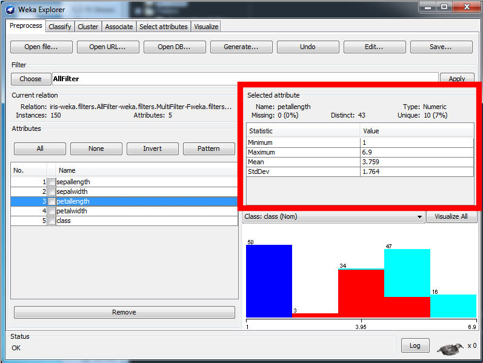
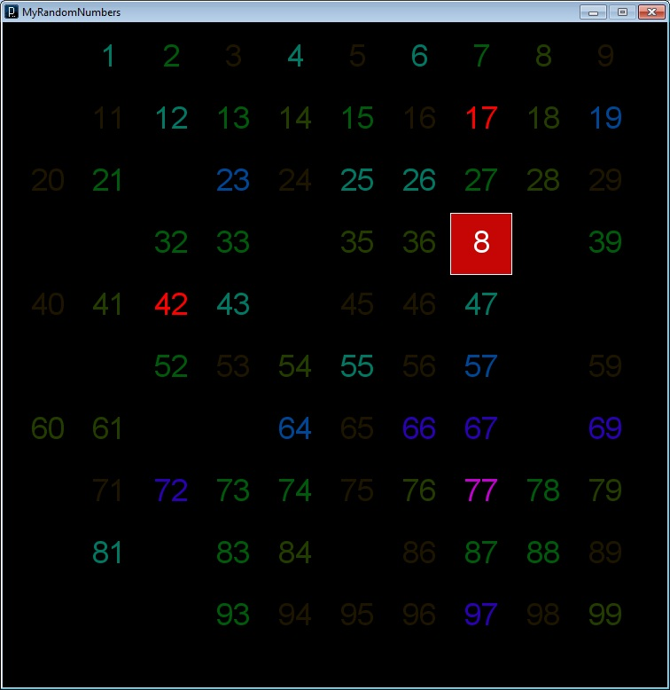

When discussing the field of Data Mining, the most important topic to discuss is data. While most books, classes and software programs focus on the techniques for sifting through data and extracting useful information, discussing the data itself is often overlooked. The data is often the most difficult part of a data mining experiment. Data quality, or lack thereof, is most apparent when real world data is used instead of the neat and tidy examples found in most books. An in depth discussion of working with real world data is covered in most detail in the KDD Cup project.
In Introduction to Data Mining, Tan et al cover the four main data types, divided into two groups. The first group is numeric data, also called quantitave data. In the numeric data group there are interval and ratio data types. Ratio data is the continuous data we see everyday including values like height of a door or time of day. The term ratio comes from the fact that the ratio of data intervals is preserved. An example is that the difference between people weighing 220 and 200 pounds is the same difference ratio between two people weighing 150 and 130 pounds, or twenty pounds. The term ratio can be misleading since it typically implies multiplication or scaling. Interval data is data where the difference between two values is significant. The second group is categorical data, sometimes called qualitative data. The types in this group are nominal and ordinal. Nominal refers to discrete descriptors for a particular item. For example eye color can be blue, brown or hazel, but an eye color of 3.76 makes no sense. Many times nominal data is represented by integers or letters for ease of storage. In the previous example, 1 may indicate blue eyes and 2 might indicate brown eyes. Ordinal data is also made up of discrete values, but the order of these values is significant. An example is small, medium, large and super-size french fries. The order is important and gives additional information about the item. The four data attribute types presented here are described only for a rounded representation of the classic data attribute types. It is normal to find these terms extremely confusing at first.
When performing data mining, the data is organized into a set structure to allow for storage. Data sets come in three main types: record-based, graph-based and sequential. Record-based data sets are often referred to as databases or tabular data. In record-based data there is a fixed set of columns, each describing an attribute of the data, and one row or "record" for each data item. Record-based data is the focus of the semester and the majority of Data Mining literature and software. Graph-based data represents information and relationships visually. For some data it is easier to communicate information to humans using a picture instead of numbers. An example is a triangle - using a graph-based set it is easy to represent a three lines on a grid and see a number of interesting pieces of information instantly. For example it is easy to tell the name of the shape (triangle), whether or not it is a right triangle, and what the slopes of the lines that makes up the triangle are. This same information can be represented using records as well, with columns indicating the number of sides, locations of the points, values of the slopes of the edges and a true/false column indicating if two edges are perpendicular (i.e. right triangle). This example illustrates the difference between record and graph based data sets - records are much easier for a computer to analyze and graphs and other visual elemts are much easier for a human to recognize. The third set type is sequential where the data is put into a specific order. The order can be time based, for example measuring the temperature of water on a stove every 5 seconds. The order can also be location based, for example measuring elevation every 100 feet using a GPS. Humans often transform sequential data into graph-based data to make it easier to understand as a whole. Sequential data can also be transformed into record-based data for easy storage on a computer. The water temperature readings described earlier along with a timestamp could be placed into a SQL database or written on a piece of graph paper.
Now that the types of data attributes and their organization into sets has been discussed, it is important to look at the data that is to be mined. More often than not the data contains errors and is not gathered for our use. Errors can come from many sources, but the most notable is human error. Some examples of human error are spilling coffee on a paper with measurement readings on it, mistyping values into a computer, poor handwriting and boredom (try taking 1000 readings using a microscope over a period of 2 days!). Errors can also be caused by equipment and computers that are supposed to be robust and infallible. A wire may be randomly shorting out inside a knicked cable causing an erroneous reading every few minutes. A solder joint on a microchip may be broken causing a reading of zero for a long period of time. The equipment may not be suitably sized for the application - try measuring the thickness of a piece of paper with a ruler. The code that reads the value of a sensor and writes the value to disk may have a conversion error and write floating point values as integers, causing a loss of data precision. Sometimes, there are just blank entries. The truth is that errors will be part of the data set. The job of the data scientist is to mine the data knowing that errors exist. One way to accomplish this is to use algorithms that are robust to noise, outliers and anomalies. Another way is to recognize and extract anomalies and other erroneous data. More discussion on anomalies is presented on a future page, please see anomaly detection. Some errors are easy to spot, like a negative age or a height of 200 inches. Others are more difficult, for example five entries for the same person, listed as "Matt O'Neal", "Matt O'neal", "Matt ONeal", "Matthew O'Neal" and "Matthew J. O'Neal". For missing or erroneous data - should it be excluded or corrected using an educated guess? If height is entered as 720 inches, should it be corrected to 72 inches (a believable value) or excluded altogether?
It is important to remember that data is not always collected for the mining purpose it is later used for. An example is a survey conducted by a clothing company to see what sizes and styles of their pants people like. By random chance this survey also asks if people are left-handed or right handed and their height. Later, a medical data miner is interested to see if there if left-handed people are more or less obese than right-handed people on average. A transformation between height and reported pants size can give an estimate of obesity, but without the direct weight or BMI measurements by a doctor it is hard to get perfect results. This type of data collection may have cost ten million dollars and it is unlikely to be repeated because of the cost and the fact that people filling out a clothing company survey are unlikely to go to a doctor to get weighed.
Once the data set is error free (or at least as close as possible) it would be nice to send it into a software suite and press a button and get results. Perhaps someday this level of automation will exist, but that will be 5 to 10 years or more in the future. Today, data needs to be examined and preprocessed before it can be fed into a data mining algorithm. Part of the examination and preprocessing is to remove errors as discussed in the previous section. It is also useful to look at statistical values for the data to learn more about the individual data attributes. Figure 1 shows an example for numeric data and Figure 2 shows and example for categorical data. Summary statistics can help identify outliers, anomalies and errors. For example a data set with a min of 0.9, mean of 1, standard deviation of 0.1 and max of 1000 probably has one value with an extremely large value. Figure 2 shows us that the gill-attachment column is not useful since one of four possible values occurs 97% of the time.
There are also some non-numeric values that should be examined along with the data set. One of the most important non-numeric value is the data domain. For the music ratings classification KDD Cup () it is important to know that many music tracks are on one album, one artist can have many albums and that genre ratings are very difficult to assign and have a weak relationship with tracks, artists and albums. This information can be used to help transform the data into the most useable form and aid in choosing the best algorithms for mining the data. Another example is a candy company that is mining its sales data. If they start an advertising campaign in January and September and see massively increased sales near February 14th and October 31st they may be inclined to think the advertising is working. Only by knowing holidays in the United States and that candy is a common gift on Valentine's Day and Halloween can the true cause be known.
One final and important lesson on Data Mining is presentation of the results. Very few people are experts in data mining, especially those who are making policy decisions in large organizations, governments and companies. These people will not understand technical data mining terms and could care less if a rule has a confidence of 0.945 and support of 0.876. They will understand a graph showing how that information can be used to improve sales. Or an animated time lapse of how a tweeting ad campaign resulted in re-tweets and sales on a map of the United States over a 1 week period. Figure 3 shows an example of a visualization. A random data set of the numbers 1-100 was created and the color represents the number of times each value appears. A darker color indicates a number occurs less frequently in the set. When a the mouse is placed over a number, the background color changes to red to show the number of times a value appears in the data set. This visualization could be used to test a random number generation algorithm. If the colors are not a similar hue, it indicated the algorithm is not very good at being random and the mouse over feature allows the user to spot check the results.
